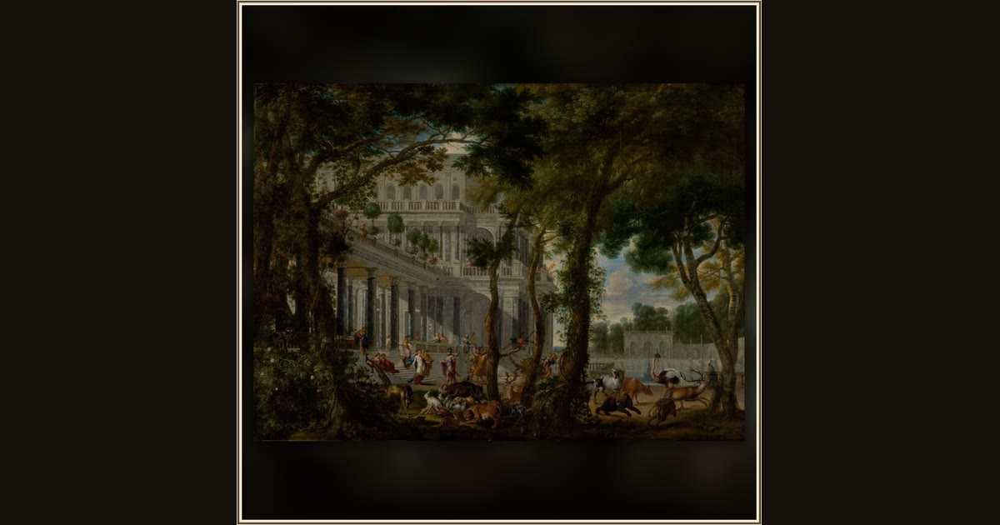

Ulysses at the Palace of Circe
Wilhelm Schubert van Ehrenberg · 1667 · The J. Paul Getty Museum · Los Angeles, USA
In this shadowy painting, Odysseus arrives at the palace of the enchantress Circe, whose magic could turn brave men into beasts. Explore its place in Book X of the Odyssey.